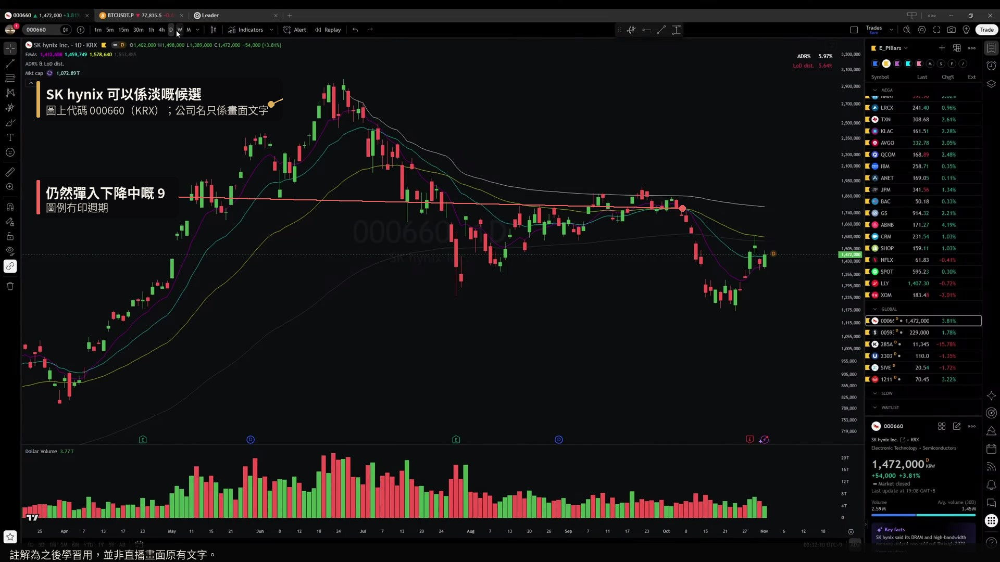
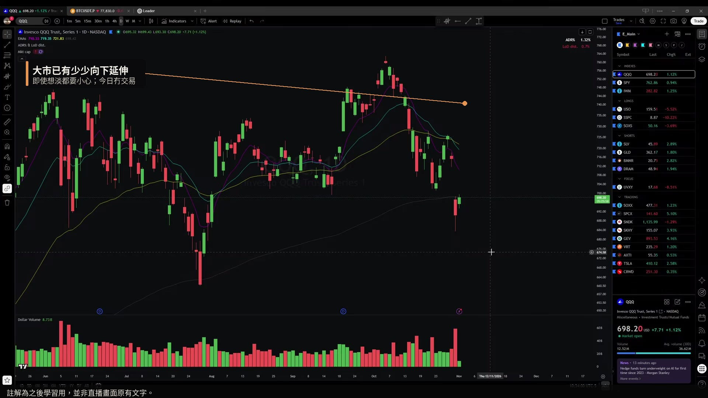

概要
個股可以係淡，大市位置卻叫人收斂
2:20:25 畫面係韓國交易所嘅 000660，圖上寫 SK hynix Inc.，公司名稱只係畫面文字。佢覺得可以係淡嘅候選，但仍然彈入下降中嘅 9。2:22:14 轉回 QQQ，話而家向下有少少太延伸，即使想淡部分名稱都要小心。最後說今日冇交易，結束直播。
圖一 · 主圖
SK hynix：可淡，但仍彈入下降 9
直播 2:20:30

原話
I think SK Hynix could be the short candidate. Somehow it's still bouncing into the declining nine.
我覺得 SK Hynix 可以係淡嘅候選。唔知點解，仍然彈入呢條下降中嘅 9。
YouTube 寫 “SK Heinix”，Whisper 寫 “Eswar X”。畫面代碼係 000660，名稱寫 SK hynix Inc.，只當圖上文字。
點樣讀
「可以係淡」同「仍然彈入下降 9」要一齊讀：個股方向可以偏淡，但現價仍在反彈入均線，不是已經跌破嘅追淡。
圖例冇印 9。註解只指下降中較快均線嘅位置。
圖二
大市已有少少向下延伸，要小心
直播 2:22:20

原話
Yeah, but right now we are getting a little bit too extended to the downside. I think I will be a little bit cautious, even though I would like to short some of the names, or maybe longs, I don't know. Oh, no trade today. And I think that's the end of today's stream. So thank you guys for coming, and we'll see you in the next one.
不過而家我哋向下已經有少少太延伸。即使我想淡部分名稱，或者甚至做多，我都唔肯定，總之會小心啲。噢，今日冇交易。我諗今日直播就到呢度。多謝大家來看，下次見。
YouTube 寫 “maybe maybe loss”；Whisper 較清楚寫 “or maybe longs”。兩者都帶不確定，本站用 longs 並加註。
點樣讀
收結係謹慎：大市已有少少向下延伸，即使想淡都要收斂。今日冇新交易。呢句係收播陳述，唔好延伸成預測。
附註
注意事項
- 圖上代碼係 000660（KRX），名稱寫 SK hynix Inc.，只當畫面文字，唔當成企業聲明。
- YouTube／Whisper 對代碼都有聽錯，本站按畫面更正。
- 畫面睇唔到成交價、倉位或者損益。今日冇交易係原話。
免責聲明：呢份係教育拆解，唔係投資建議，亦唔好當作買賣指示。